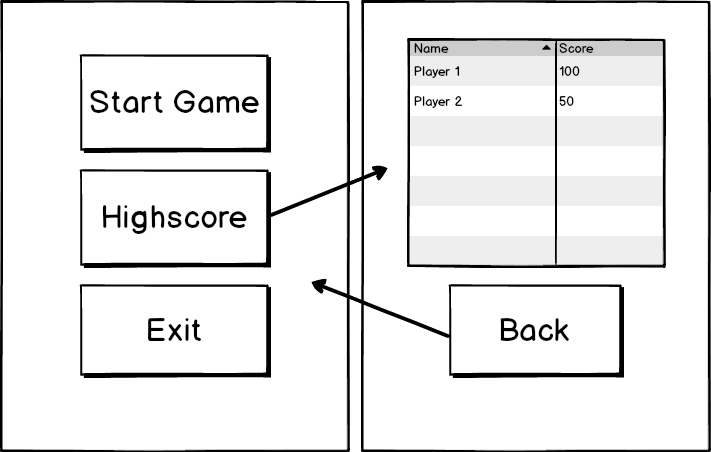
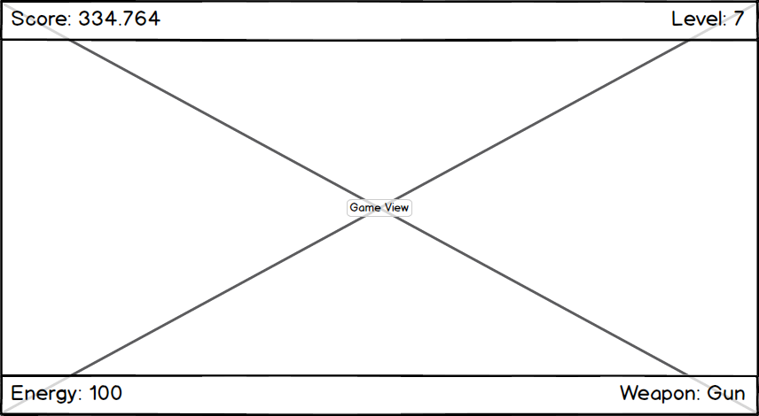

Overview
The C# Framework has its own UI System which is used for the creation of user interfaces and Heads-Up-Displays (HUD) in the game. The Sydewinder game features a 3D main menu which is used to Start and Quit the game and also a 2D in-game HUD to view the Current Score and Player Energy. Additionally, a 3D high score menu is also available to compare the scores between the Sydewinder players. The high score menu can be accessed through the main menu. The main and high score menu's textures are rendered by CRYENGINE and placed on geometry in the 3D environment while the 2D in-game HUD is rendered on top of the screen.
Main Menu - Overview
After game initialization the main menu is shown to the player. This is achieved by rendering the main menu as a material on a preplaced plane geometry in the canyon level. Similarly the camera is placed in front of the plane.
All this occurs at the main entry point of the Sydewinder application using the method InitializeMainMenu in the SydewinderApp class.

The menu encapsulates its own logic in the MainMenu class, which inherits from the SceneObject class. This makes the MainMenu class a native UI element which can be instantiated as any other UI Element.
New instances of the MainMenu class can be made as in the following example:
public sealed class MainMenu : SceneObject
{
// ...
private static MainMenu _instance;
public static MainMenu GetMainMenu(SceneObject root)
{
if (_instance == null)
{
_instance = SceneObject.Instantiate<UI.MainMenu> (root);
}
return _instance;
}
//...
}Main Menu Elements
Both the main menu and high-score menu use similar UI elements which are hierarchically stacked:
Main Menu
- Canvas
- Window
- Button (Start)
- Button (Highscore)
- Button (Exit)
- Window
Highscore Menu
- Canvas
- Window
- Table
- Button (Back)
- Window
The hierarchy is generated by adding the parent element while instantiating new UI elements.
private void CreateMainMenu()
{
_mainMenuPage = SceneObject.Instantiate<Canvas>(Root);
//...
Window mainMenuWindow = SceneObject.Instantiate<Window>(_mainMenuPage);
_startButton = SceneObject.Instantiate<Button>(mainMenuWindow);
//...
_highscoreButton = SceneObject.Instantiate<Button>(mainMenuWindow);
//...
_exitButton = SceneObject.Instantiate<Button>(mainMenuWindow);
//...
}The Canvas, Window and Button classes are part of the C# UI Framework and the Table class which is used for the high-score menu is part of the Sydewinder project. To create custom UI elements the UI System can be extended.
Main Menu Appearance
To give a unique look to the game the UI elements mentioned above are styled in various ways.
All Window and Button elements will use the same style, while the common style will be applied using a single function.
private void ApplyMenuStyle()
{
var backgroundImageURL = Path.Combine(Engine.DataDirectory, "Textures/ui/scroller_window_512.png");
var buttonBackgroundURL = Path.Combine(Engine.DataDirectory, "Textures/ui/Ui_button.png");
var buttonHighlightedURL = Path.Combine(Engine.DataDirectory, "Textures/ui/Ui_button_selected.png");
Root.ForEach<Window>(x =>
{
x.Caption = "Sydewinder";
x.Background.Source = ResourceManager.ImageFromFile(backgroundImageURL);
x.CaptionHeight = 40;
x.RectTransform.Size = new Point(TEXTURE_RESOLUTION, TEXTURE_RESOLUTION);
x.RectTransform.Alignment = Alignment.Center;
// Apply common style to all buttons within the window.
x.ForEach<Button>(b =>
{
b.RectTransform.Size = new Point(300, 120);
b.Ctrl.Text.Height = 48;
b.BackgroundImageUrl = buttonBackgroundURL;
b.BackgroundImageInvertedUrl = buttonHighlightedURL;
b.Ctrl.OnPressed += () => Audio.Play("menu_select");
b.Ctrl.OnFocusEnter += () => Audio.Play("menu_switch");
});
});
}Main Menu Navigation
After clicking the Highscore button, the camera moves smoothly towards the Highscore plane and returns to the Main Menu plane when the Back button is clicked.
private static void StartCameraMove(int seconds, Vec3 finalPosition, Vec3 finalFordwardDirection)
{
_startPosition = Camera.Position;
_endPosition = finalPosition;
_startDirection = Camera.ForwardDirection;
_endDirection = finalFordwardDirection.Normalized;
_animationProgress = 0;
_animationSpeed = 1 / (Math.Max(seconds, 0.01f));
}
public override void OnUpdate()
{
if(_animationProgress < 1.0f)
{
// No need to clamp it because Lerp is already clamped.
_animationProgress += _animationSpeed * FrameTime.Delta;
Camera.Position = Vector3.Lerp(_startPosition, _endPosition, _animationProgress);
Camera.ForwardDirection = Vector3.Lerp(_startDirection, _endDirection, _animationProgress);
}
}HUD - Overview
When you play the game a Heads-Up-Display (HUD) shows the status of the current game session.
In contrast to the MainMenu class, the Hud class inherits from the Component class and is not rendered as a material on a 3D object. Instead, it is always rendered on top of the current screen and independent of the camera position and level.

The HUD is managed by the Hud class. It is also responsible for the Game Paused and Game Over dialog options. All the UI elements are initialized with the InitializeMainHud method and are shown or hidden based on the state of the game.
Similar to the main menu, the HUD is a hierarchical collection of UI elements with a Canvas class used as a top most element. These are arranged in the following hierarchy:
- Canvas
- Panel (Top of screen)
- Text (Score)
- Text (Level)
- Panel (Bottom of screen)
- Text (Energy)
- Text (Weapon)
- Panel (Game Paused dialog)
- Text (Game Paused)
- Button (Resume Game)
- Button (Exit Game)
- Panel (Game Over dialog)
- Text (Game Over)
- Text (Your Name:)
- TextInput
- Button (OK)
- Panel (Top of screen)
The Game Paused and Game Over dialog options are controlled with references to the corresponding Panel elements in conjunction with Show/Hide methods.
public class Hud : Component
{
//...
private Panel _gamePausedDialogPanel;
//...
private Hud(SceneObject root, Color backgroundColor, Color foregroundColor)
{
//...
_gamePausedDialogPanel = CreateDialogPanel();
//...
}
public void ShowGamePauseDialog()
{
// Show mouse cursor
Mouse.ShowCursor();
_gamePausedDialogPanel.Active = true;
}
public void HideGamePauseDialog()
{
// Hide mouse cursor
Mouse.HideCursor();
_gamePausedDialogPanel.Active = false;
}
}HUD Updates
For updating a score, level, energy or a weapon name while playing the game, the Hud class internally stores references to the Text elements and provides various methods for setting the corresponding values. These methods are called in the game loop.
public class Hud : Component
{
//...
private Text _scoreText;
//...
public void SetScore(double score)
{
Score = score;
_scoreText.Content = string.Format("Score: {0}", Score.ToString("N0", CultureInfo.GetCultureInfo("de-DE")));
}
//...
}
public class SydewinderApp : Application
{
//...
public virtual void OnUpdate()
{
//...
Hud.CurrentHud.SetScore(_gameData.Score);
//...
}
//...
}